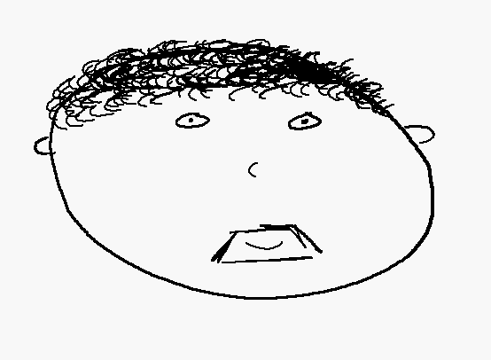

Recycle Me
An AI Recycling Assitant; February 14, 2025

Over the last weekend I participated in Hack Duke, Duke Universities annual hackathon. The hackathon had a few different tracks provided: interactive media, health, sustainability, and finance. We were lucky enough to have our first idea be the one that we stuck with, that is, a recycling assistant...
Website
Portfolio and Professional Website; January 31, 2025
I am sitting here now mere minutes after laying myself bare to the internet. The reason why I don’t say that it is complete is simply, because it is not. Any brief exploration of the site will show that there is still much work to be done; links are broken, images are incorrectly sized, and there is no favicon. Yet, despite its flaws, it is out there for the world to tear apart...
Me
